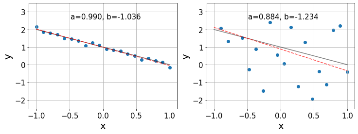

def line(x, a, b):
"Evaluates `a + x*b`"
return a + x*b
def synthetic_data(x, intercept, slope, std):
"Create a noisy synthetic dataset."
return line(x, intercept, slope) + std*np.random.randn(len(x))This post is part of a series in which we provide an introduction to statistics and data analysis introducing analysis of variance (ANOVA) and regression. They contain most of the teaching material developed for the Msc of Multidisciplinary Research in Experimental Sciences (BIST).
The main goal is to provide an intuition about the main ideas behind the different techniques together with simple code examples that implement them from scratch.
Note
We strongly recommend understanding the ANOVA post before moving forward, as most concepts are the exact same. ANOVA and regression are forms of general linear models and, therefore, they are based on the same principles.
Introduction
In a regression analysis we aim to find trends or relationships in our data. In the most basic scenario, we have an explanatory variable \(x\) which we expect to have some influence over a response variable \(y\) and the goal is to find the relationship between them. The explanatory variables can either be continuous or categorical, but the response variable is always continuous. Furthermore, the relationship between the two variables can be an arbitrarily complex function \(y(x)\), although in most applications it is a smooth function.
In this introductory post we will start by considering a single explanatory continuous variable and a linear relationship of the form \(y=\alpha+\beta x\), which is known as linear regression.
Linear regression
As we have briefly introduced above, in a linear regression setting we only have a single explanatory variable \(x\) that follows a linear relationship with the response variable \(y\) of the form \(y=\alpha+\beta x\). A linear regression, while being the most simple form of regression, allows us to identify general trends in our data. Furthermore, any smooth function can be approximated by a straight line over a sufficiently short range. Therefore, in an extreme case, we can approximate any function by a series of linear regressions (not recommendable).
As in ANOVA, the true values \(\alpha\) and \(\beta\) are inaccessible and the best we can do is to estimate them from our data, obtaining the coefficients \(a, b\) such that \(y\approx a+bx\). Below, we show two examples of linear regression using synthetic data with \(\alpha=1, \beta=-1\) and different degrees of noise. The black lines indicate the true relationship \(y=\alpha + \beta x\) and the red lines show the best estimation \(y=a+bx\).
np.random.seed(7) # Set random seed for reproducibility
n = 20
x = np.linspace(-1, 1, n)
a, b = 1, -1
std_easy, std_hard = 0.1, 1.2
datasets = synthetic_data(x, a, b, std_easy), synthetic_data(x, a, b, std_hard)Code
fig, axes = plt.subplots(1, 2, figsize=(12, 4))
exact_relation = line(x, a, b)
for ax, ds in zip(axes, datasets):
ax.scatter(x, ds)
ax.plot(x, exact_relation, color='k', alpha=0.5)
b_est, a_est = np.polyfit(x, ds, 1)
ax.plot(x, line(x, a_est, b_est), color='r', linestyle='--', alpha=0.7)
ax.grid()
ax.tick_params(labelsize=15)
ax.set_ylim(-2.5, 3.5)
ax.text(-0.49, 2.6, f"a={a_est:.3f}, b={b_est:.3f}", fontsize=15)
ax.set_ylabel("y", fontsize=20)
ax.set_xlabel("x", fontsize=20);
In the left plot, we see that the estimates \(a,b\) are pretty accurate, given that the data follows a nearly perfect linear relationship. However, in the right plot the linear relationship is not so clear and we only find a generic trend on the data. Consequently, in this last case, the relative errors in the estimation of the coefficients is an order of magnitude larger than in the previous case.
Finding the best fit
Now that we have built some intuition about he problem, let us dive into the details of how we find the previous red lines. The best fit is the line that minimizes the sum of all errors to our data points. However, the deviations from the line \(y_i-y(x_i)\) can take positive and negative values, as in the calculation of the variance in ANOVA. Hence, we quantify the error by the sum of squares (SS) of the deviations \[SS = \sum_{i=1}^n (y_i-y(x_i))^2,\] where \(y(x_i)\) indicates the prediction of the fit line at the point \(x_i\). The minimization of the SS gives the name to the algorithm: least squares.
In practice, this optimization is usually performed by derivating \(SS\) with respect to the function parameters and setting the equations to zero, as in this example. In this case, we would solve the system of equations \[ \begin{align} \frac{\partial SS}{\partial a} &= 2\left(na - \sum_{i=1}^n y_i - bx_i\night) = 0 \\ \frac{\partial SS}{\partial b} &= -2\sum_{i=1}^n x_i(y_i-a-bx_i) = 0 \end{align} \] considering that every term in the \(SS\) can be expressed as \((y_i-a-bx_i)^2\).
x = np.linspace(-1, 1, n)
std = 0.2
y = synthetic_data(x, a, b, std)
b_est, a_est = np.polyfit(x, y, 1)
fit = line(x, a_est, b_est)Code
plt.figure(figsize=(7, 4))
plt.scatter(x, y)
plt.plot(x, fit, color='r')
plt.grid()
plt.text(0.05, 1.65, f"a={a_est:.4f}, b={b_est:.4f}", fontsize=15)
plt.tick_params(labelsize=15)
plt.ylabel("y", fontsize=20)
plt.xlabel("x", fontsize=20);Regression analysis
ANOVA
In order to perform the analysis, we can understand the optimization process in a different way:
As in ANOVA, we start by fitting the grand mean of the data \(\bar{y}\). This results into a flat line of the form \(y=\bar{y}\) from which the deviations of all points add up to zero. We quantify the error arround the mean with the previously introduced \(SS_{total}\) from ANOVA, which we denote as \(SSY\) as we shift towards a more general notation.
Then, we rotate the line around the mean coordinate \((\bar{x}, \bar{y})\) until we find the one that minimizes the error. Rotating the line, we bring it closer to the data points reducing the overall deviations. Nevertheless, there will still be some variability left to be explained, unless the data follows a perfect line, which we refer to as the error SS denoted \(SSE\). This is the equivalent quantity to the \(SS_{within}\) introduced in ANOVA, which quantifies the error between our fit and the datapoints.
The difference between \(SSY\) and \(SSE\) is the variability captured by the regression, denoted \(SSR\) (analogous to \(SS_{between}\)) which quantifies the distance between the grand mean and the fit. Hence, these quantities follow the relationship \[SSY = SSR + SSE\]
In the plots below we illustrate the distances quantified by each of the terms in a new synthetic dataset.
Code
fig, axes = plt.subplots(1, 3, figsize=(16, 4))
# Total SS
grand_mean = y.mean()
axes[0].scatter(x, y)
axes[0].hlines(grand_mean, x[0], x[-1], alpha=0.9)
axes[1].scatter(x, y)
axes[1].plot(x, fit, color='r', alpha=0.7)
axes[2].plot(x, fit, color='r', alpha=0.7)
axes[2].hlines(grand_mean, x[0], x[-1], alpha=0.9)
for xi, yi, fi in zip(x, y, fit):
axes[0].vlines(xi, yi, grand_mean, linestyles='--', alpha=0.7)
axes[1].vlines(xi, yi, fi, linestyles='--', alpha=0.7)
axes[2].vlines(xi, fi, grand_mean, linestyles='--', alpha=0.7)
axes[0].set_title(r"$SSY$", fontsize=20)
axes[1].set_title(r"$SSE$", fontsize=20)
axes[2].set_title(r"$SSR$", fontsize=20)
for ax in axes:
ax.set_ylim(-0.22, 2.4)
ax.tick_params(labelsize=13)
ax.set_ylabel("y", fontsize=16)
ax.set_xlabel("x", fontsize=16)
ax.grid(alpha=0.5)In order to perform the proper statistical analysis, we have to take into account the partition of the degrees of freedom (DF). For a dataset with \(n\) points, we have \((n-1)\) DF for \(SSY\) as we know that the deviations are subject to the constraint of adding up to zero. This way, if we know the value of \((n-1)\) deviations, we can infer the value of the last one.
For \(SSR\) we have two DF \(a, b\). However, since we have the constraint that the line must go through the mean point \((\bar{x}, \bar{y})\), finding one parameter immediately sets the other and, therefore, we only have one DF. Hence, there are \(n-2\) remaining DF for \(SSE\) corresponding to the original \(n-1\) DF minus a regression coefficient. This last one can also be understood as that we lose two degrees of freedom estimating \(a, b\) from the \(n\) data points.
With these quantities, we can perform the ANOVA of our regression.
grand_mean = y.mean()
sse = np.sum((y - fit)**2)
ssr = np.sum((fit - grand_mean)**2)
dfe, dfr = n-2, 1
mse, msr = sse/dfe, ssr/dfr
f_ratio = msr/mse
print(f"F-ratio of {f_ratio:.4f}.")F-ratio of 151.2594.Promising F-ratio! Seems like a good fit, we just need to check a couple more things :)
R-squared
With the same quantities used for the ANOVA, we can compute the \(R^2\) metric. The \(R^2\) quantifies the fraction of variability explained by the resulting fit \[R^2 = \frac{SSY-SSE}{SSY} = \frac{SSR}{SSY}.\] In the case of a perfect fit, \(SSE=1\) and \(R^2=1\). Hence, values of \(R^2\) close to one are indicative of a good fit, while small values may suggest that there are other important variables besides \(x\) influencing \(y\).
ssy = np.sum((y - grand_mean)**2)
r_sq = ssr/ssy
print(f"R^2={r_sq:.4f}")R^2=0.8937Quite high \(R^2\) means that most of the variance in the data is captured by our regression. Very good fit!
Significant relationships
Once we estimate our coefficients \(a,b\) we have to address the question of whether the relationship that we have found is statistically relevant. The strength of the relationship is determined by the resulting slope and so we want to know what are the odds that the obtained slope could have simply happened by chance alone.
This way, we formulate our null hypothesis of no relationship \(\beta=0\), as it is quite natural to assume that there is no relationship until the evidence shows otherwise. Then, we compute the standard error of our slope estimation \(\varepsilon_b\), with which we can check how many standard deviations lie between our estimation from the null hypothesis \(t=b/\varepsilon_b\). Finally, we can perform a t-test and accept or reject the null hypothesis accordingly.
The standard error of the slope is obtained as \(\varepsilon_b=\sqrt{\frac{MSE}{SSX}}\), where \(MSE=SSE/DFE\) and \(SSX=\sum_{i=1}^n (x_i - \bar{x})^2\).
from scipy.stats import tssx = np.sum((x - x.mean())**2)
eb = np.sqrt(mse/ssx)
t_val = b_est/eb
t_ratio = t.pdf(t_val, df=dfe)
print(f"t-ratio {t_ratio:.2e} for {t_val:.2f} standard deviations away from null hypothesis")t-ratio 2.23e-10 for -12.30 standard deviations away from null hypothesisConfidence intervals
Our fitting is subject to statistical fluctuations, which means that it is subject to the amount of data that we have access to. Since we can only work with a limited amount of data points, if we were to repeat the whole process given a different sample from the exact same phenomenon our estimation of the regression coefficients \(a,b\) would vary. The more data points we have, the smaller these variations would be and, therefore, the more confident we can be about our results.
Therefore, it is of extreme importance to not only provide our results, but also a measure of the confidence of our estimation. A common practice is to provide intervals in which we are \(95\%\) sure that our estimaties lie within. In regression we can provide confidence intervals for both the coefficients and the predictions.
- Coefficient interval
We have computed the standard error of the slope to assess whether the relationship that we have found is statistically significant. These errors allow us to compute confidence intervals for our regression coefficients in a very simple way following the relationship \[CI = \text{coeff}\pm t_{\text{crit}}\varepsilon_{\text{coeff}}.\] For instance, in the case of the slope we would report \[CI_b = \text{b}\pm t_{\text{crit}}\varepsilon_b,\] where \(t_{\text{crit}}\) is the value of the \(t\)-distribution corresponding to the desired confidence, according to the DF. The DF for these estimates are always the DFE.
t_crit = 2.101 # two-sided 95% for 18 df
conf = t_crit*eb
print(f"The vlaue of the slope is {b_est:.4f}+-{conf:.4f}")
print(f"The true value lies in ({b_est-conf:.4f}, {b_est+conf:.4f}) with 95% confidence.")The vlaue of the slope is -0.9723+-0.1661
The true value lies in (-1.1384, -0.8062) with 95% confidence.- Prediction interval
The same way we have errors and build coefficient interavls in the regression coefficients, we can also provide a measure of confidence for our predictions. In this case, we have to account for two factors influencing the error.
On the one hand, even if we assume that our fit \(y=a+bx\) matches the true line \(y=\alpha+\beta x\), there will still be some uncertainty due to scattering around the true line. We can provide a confidence interval just as before \[CI = y\pm t_{\text{crit}}s,\] where \(s\) is the standard deviation of the error \(s=\sqrt{MSE}\).
On the other hand, we also have to account for the fact that our fit does not match the exact true line. The prediction error will be heavily affected by the accuracy with which the slope and the intercept have been estimated. The more samples we have, the better estimates of the coefficients and, the closer to the mean point \((\bar{x},\bar{y})\), the smaller the influence of the slope errors.
Taking all these aspects into account, we can assign a prediction uncertainty \(PI\) to every point \(x\) of the form \[PI(x)=y(x)\pm t_{\text{crit}}s\sqrt{\frac{1}{m}+\frac{1}{n}+\frac{x-\bar{x}}{SSX}},\] where every source of uncertainty adds an additional term: \(\frac{1}{m}\) quantifies the scattering around the true line, with \(m\) being the number of \(y\) values at \(x\) (\(m=1\) in our case); \(\frac{1}{n}\) quantifies the uncertainty in the intercept estimation \(a\), the more datapoints, the lower the error; \(\frac{x-\bar{x}}{SSX}\) accounts for the uncertainty in the slope, the errors grow as we get further from the mean point.
s = np.sqrt(mse)
m = 1
xx = np.linspace(-3, 3, 100)
pred = line(xx, a_est, b_est)
interval = t_crit*s*np.sqrt(1/m + 1/n + (xx - x.mean())/ssx)Code
plt.scatter(x, y)
plt.plot(xx, pred, color='r', alpha=0.7)
plt.fill_between(xx, pred + interval, pred - interval, alpha=0.15)
plt.grid()
plt.tick_params(labelsize=15)
plt.xlabel("x", fontsize=20)
plt.ylabel("y", fontsize=20);
Influential points and outliers
The main goal in regression is to minimize the SS from our fit line to the datapoints. As we have seen, all the fit lines go through the mean point \((\bar{x}, \bar{y})\) and pivot around it. Hence, the error around this piont is rather small and barely influenced by the regression coeffcients.
On the contrary, the predictions on the points far from the center are largely influenced by the estimation of the slope and, therefore, they are subject to larger errors. Hence, these points dominate the SS, becoming the most important ones in the minimization. We call these points influential points as they can significantly affect our estimates \(a, b\).
Additionally, we have to account for outliers, which are points that do not follow the distribution of our data. We can identify these points by standardizing the residuals diving by their standard deviation. This way, we should find \(95\%\) of our samples within 2 standard deviations from the line. The outliers are the remaining \(5\%\) of our data (1 every 20 samples) and, by definition, lie far from the line yielding large errors.
Outliers can be extremely harmful for our estimation if they are found in an influential position. In some cases, the data is curated by removing the outliers in order to prevent such situations. However, that is not the best practice and, whenever it is performed, there should be reported results before and after the outlier removal.
Below we show three cases in which we can see the effect of influential points.
Code
x_out = [1.5, 1.5, 0.1]
y_out = a + b*x_out[0], 0.6, 0
fig, axes = plt.subplots(1, 3, figsize=(16, 4))
for ax, x_o, y_o in zip(axes, x_out, y_out):
x_ext, y_ext = np.concatenate((x, [x_o])), np.concatenate((y, [y_o]))
exact_relation = line(x_ext, a, b)
ax.scatter(x, y)
ax.scatter(x_o, y_o, color='r')
ax.plot(x_ext, exact_relation, color='k', alpha=0.5)
b_est, a_est = np.polyfit(x_ext, y_ext, 1)
ax.plot(x_ext, line(x_ext, a_est, b_est), color='r', linestyle='--', alpha=0.7)
ax.grid()
ax.tick_params(labelsize=15)
ax.set_ylim(-2.5, 3.5)
ax.text(-0.49, 2.6, f"a={a_est:.3f}, b={b_est:.3f}", fontsize=15)
ax.set_ylabel("y", fontsize=20)
ax.set_xlabel("x", fontsize=20)
axes[0].set_title("Beneficial",fontsize=20)
axes[1].set_title("Harmful outlier", fontsize=20)
axes[2].set_title("Harmless outlier", fontsize=20);On the left, we see an influential point that is over the exact distributiond. Then, in the middle, we see an influential point that is an outlier, significantly harming the resulting fit. Finally, on the right, we see an outlier that is found in a position with little influence, barely affecting our fit.
Example: weather in Szeged
Lets now perform a regression analysis on a real example. Weve taken the weather in Szeged 2006-2016 dataset from Kaggle. We will see whether there is any clear relationship between the apparent temperature and the humidity.
In order to make things easy, weve taken a small sample of the whole dataset with 50 points.
humidity = np.array([0.98, 0.85, 0.82, 0.75, 0.85, 0.99, 0.44, 0.96, 0.6 , 0.54, 0.73,
0.51, 0.86, 0.78, 0.83, 0.99, 0.75, 0.93, 0.94, 0.77, 0.45, 0.93,
0.66, 0.85, 0.63, 0.79, 0.8 , 0.75, 0.47, 0.86, 0.73, 0.43, 0.81,
0.8 , 0.51, 0.97, 0.66, 0.34, 0.87, 0.93, 0.85, 0.73, 0.5 , 0.92,
0.93, 0.59, 0.56, 0.92, 0.82, 0.92])
app_temp = np.array([-3.5111, -5.7389, 5.1944, -11.1056, -2.7167, 6.4056, 16.1611, 6.1611,
15.7889, 19.9500, 1.1000, 13.8889, 14.9500, 8.2833, 0.2167, 11.0444,
5.2222, 4.5611, 5.5833, 19.2389, 31.900, 0.6333, 22.0611, 17.6389,
5.0444, -1.3444, -6.700, -2.0222, 21.0333, 1.7778, 10.1389, 22.0222,
5.2167, 3.2444, 12.7778, 17.3944, 1.9833, 24.9500, 9.8778, 7.4444,
-2.7333, -15.1722, 22.7778, -5.5611, 5.0889, 6.9444, 22.0611, -2.0944,
5.8056, -2.9222])n = len(app_temp)
grand_mean = app_temp.mean()
b_est, a_est = np.polyfit(humidity, app_temp, 1)
fit = line(humidity, a_est, b_est)Code
xx = np.linspace(0.2, 1, 100)
plt.scatter(humidity, app_temp)
plt.scatter(humidity, fit)
plt.plot(xx, line(xx, a_est, b_est), color='r')
plt.hlines(grand_mean, xx[0], xx[-1], alpha=0.5)
plt.text(0.22, -10, f"a={a_est:.3f}, b={b_est:.3f}", fontsize=15)
plt.grid()
plt.tick_params(labelsize=15)
plt.xlabel("Humidity", fontsize=20)
plt.ylabel("Apparent temperature", fontsize=20);ssy = np.sum((app_temp - grand_mean)**2)
sse = np.sum((app_temp - fit)**2)
ssr = np.sum((fit - grand_mean)**2)
ssx = np.sum((humidity - humidity.mean())**2)
dfe, dfr = n-2, 1
mse, msr = sse/dfe, ssr/dfr
f_ratio = msr/mse
r_sq = ssr/ssy
eb = np.sqrt(mse/ssx)
t_val = b_est/eb
t_ratio = t.pdf(t_val, df=dfe)
print(f"F = {f_ratio:.4f}")
print(f"R^2 = {r_sq:.4f}")
print(f"t-ratio = {t_ratio:.2e} for {t_val:.2f} standard deviations away from null hypothesis")F = 24.6608
R^2 = 0.3394
t-ratio = 1.54e-05 for -4.97 standard deviations away from null hypothesisWhile a large F indicates that the fit line explains a big part of the variance, the low \(R^2\) indicates that there is still a lot of error left and that, most likely, there are other aspects besides humidity influencing the apparent temperature.
t_crit = 2.009 # two-sided 95% for 50 df, should be 48 df
conf = t_crit*eb
print(f"The vlaue of the slope is {b_est:.4f}+-{conf:.4f}")
print(f"The true value lies in ({b_est-conf:.4f}, {b_est+conf:.4f}) with 95% confidence.")The vlaue of the slope is -34.1349+-13.8094
The true value lies in (-47.9443, -20.3255) with 95% confidence.The confidence interval for the slope is rather broad, as the sttistical error is quite high (order of 40%). It is not surprising seeing how the data points are spread over the line. Lets build the prediction interval.
s = np.sqrt(mse)
m = 1
pred = line(xx, a_est, b_est)
interval = t_crit*s*np.sqrt(1/m + 1/n + (xx - x.mean())/ssx)Code
plt.scatter(humidity, app_temp)
plt.plot(xx, pred, color='r', alpha=0.7)
plt.fill_between(xx, pred + interval, pred - interval, alpha=0.15)
plt.grid()
plt.tick_params(labelsize=15)
plt.xlabel("x", fontsize=20)
plt.ylabel("y", fontsize=20);